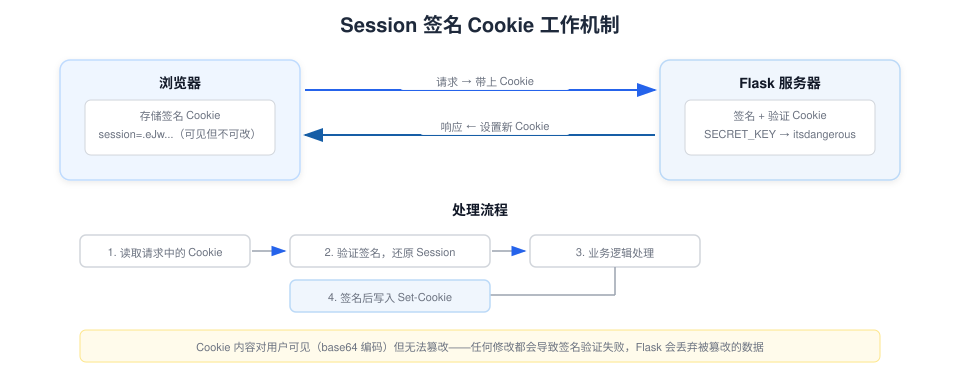

Flask Session and Cookie
HTTP protocol itself is stateless—the server won't automatically remember whether two requests come from the same user.
Flask viaSessionThe mechanism solves this problem, allowing web applications to "remember" user state.
How Session works
Flask uses by defaultSecureCookieSession, and the way it works is:
- Session data is serialized, signed with a key, and stored in the browser's Cookie.
- On each request, the browser automatically carries this Cookie.
- After Flask verifies the signature, it restores the data to a Python dictionary for you to use.
Users can see the content in the Cookie (since it is base64-encoded), but they cannot tamper with it—because any modification will cause signature verification to fail.

Configure SECRET_KEY
To use Session, you must first set a secret key.SECRET_KEY— the secret key used for signing.
Example
from flask import Flask
app = Flask(__name__)
# Generate a secure random key (only needs to be generated on the first run)
# secrets.token_hex() produces a 64-character hexadecimal random string
app.secret_key = secrets.token_hex()
# Or directly set a fixed value (convenient for development, but do not use it in production)
# app.secret_key = "dev-secret-key-change-in-production"
Important：SECRET_KEYIt must be kept secret and be sufficiently random. If the key leaks, anyone can forge your application's Session data. In production, read it from environment variables or configuration files—do not hardcode it in code.
Command to generate a high-quality key:
$ python -c 'import secrets; print(secrets.token_hex())' 192b9bdd22ab9ed4d12e236c78afcb9a393ec15f71bbf5dc987d54727823bcbf
Read and Write Session
sessionIt is a dictionary-like object, used basically the same as a Python dictionary:
Example
app = Flask(__name__)
app.secret_key = "dev-secret-key"
@app.route("/")
def index():
# Check if the session contains username
if "username" in session:
return f"""
<h1>Welcome back, {session["username"]}!</h1>
<p>Your visit count: {session.get("visits", 0)}</p>
<p><a href="/logout">Logout</a></p>
"""
return """
<h1>EXAMPLE Homepage</h1>
<p>You are not logged in yet.</p>
<p><a href="/login">Go to login</a></p>
"""
@app.route("/login", methods=["GET", "POST"])
def login():
if request.method == "POST":
username = request.form.get("username", "")
if username:
# Store the username in the session
session["username"] = username
# Initialize visit count
session["visits"] = 0
return redirect(url_for("index"))
return """
<form method="post">
<h2>Log in to EXAMPLE</h2>
<p><input type="text" name="username" placeholder="Enter username"></p>
<p><input type="submit" value="Login"></p>
</form>
"""
@app.route("/logout")
def logout():
# Clear all data in session
session.clear()
# Or delete only a specific key:
# session.pop("username", None)
return redirect(url_for("index"))
Permanent Session
By default, Session becomes invalid after the browser closes (browser-session level).
If you need a "Remember Me" feature, you can mark the Session as permanent.Permanent (permanent)：
Example
# Set the validity period of the permanent session (default 31 days)
app.config["PERMANENT_SESSION_LIFETIME"] = timedelta(days=7)
@app.post("/login-remember")
def login_remember():
username = request.form.get("username")
if username:
session["username"] = username
# Mark as permanent session, still valid after the browser is closed
session.permanent = True
return redirect(url_for("index"))
Message Flashing——One-time Messages
After the user submits the form, feedback messages such as "Operation successful" or "Error" need to be displayed.
For this kind of message that "disappears after being displayed once," Flask provides flash messages.flash()Mechanism.
Example
app = Flask(__name__)
app.secret_key = "dev-secret-key"
@app.route("/post", methods=["GET", "POST"])
def create_post():
if request.method == "POST":
title = request.form.get("title", "").strip()
if not title:
# Save error message to flash, categorized as "error"
flash("Title cannot be empty", "error")
return redirect(url_for("create_post"))
# Save success message to flash, categorized as "success"
flash(f"Article '{title}' published successfully!", "success")
return redirect(url_for("create_post"))
return render_template("create_post.html")
@app.route("/flash-demo")
def flash_demo():
# Get all flashed messages (automatically cleared after reading)
messages = get_flashed_messages(with_categories=True)
return render_template("flash_demo.html", messages=messages)
Rendering flash messages in templates:
Example
<!DOCTYPE html>
<html>
<head>
<title>Publish Article - EXAMPLE</title>
<style>
.flash-success { color: green; background: #E8EEF5; padding: 10px; border-radius: 4px; }
.flash-error { color: red; background: #ffebee; padding: 10px; border-radius: 4px; }
.flash-info { color: blue; background: #e3f2fd; padding: 10px; border-radius: 4px; }
</style>
</head>
<body>
<h1>Publish Article</h1>
<!-- Get and display all flash messages -->
{% with messages = get_flashed_messages(with_categories=true) %}
{% if messages %}
{% for category, message in messages %}
<div class="flash-{{ category }}">{{ message }}</div>
{% endfor %}
{% endif %}
{% endwith %}
<form method="post">
<p>Title:<input type="text" name="title" style="width:300px;"></p>
<p><input type="submit" value="Publish"></p>
</form>
</body>
</html>
| Category | Recommended use cases |
|---|---|
| "message" (default) | General notification |
| "success" | Operation successful |
| "error" | Operation failed |
| "warning" | Warning message |
| "info" | General information |
Flash messages rely on Session, so you must set a secret key.SECRET_KEYOnly then can it be used.
Session FAQ
other extensionsCookie Size LimitNote: Browsers limit a single Cookie to about 4KB. Do not store large amounts of data in Session—it is suitable for lightweight information such as user IDs and preferences, not for files or large objects.